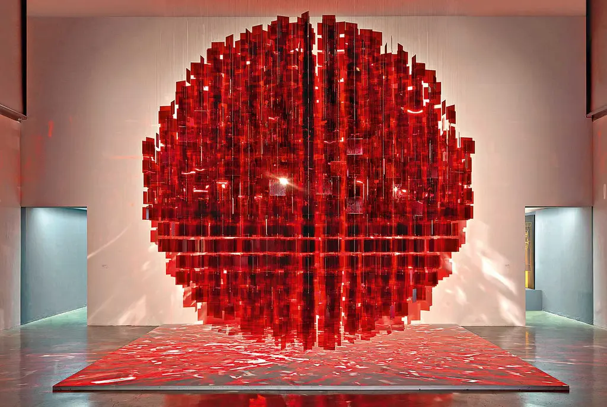

Julio parc is an Argentinian artist whose light-reflecting sculptures captured my attention years ago. I first interacted with his big rouge spheres, and found his use of geometry to be effortlessly pleasing to look at. 
When I first started watching Processing tutorials, Le Parc's sculptures were one of the first things I thought of. The code below documents a 2-dimensional version of how to animate his glass squares that spin around their central axis. The essence of the code is in setting a time axis with periodic sine functions that stretch and shrink different sides of the quadrilaterals, giving the illusion of their rotation. The RGB color values are chosen at random independently; though the random ranges of the "R" value factors in how much the square is stretched, while the "G" and "B" values are consistently chosen from the same range. A simple shadow shape is added for effect.
def setup():
size(900, 900)
frameRate(10)
rows, cols = 15, 15
num_squares = int(rows*cols)
t = [random(10) for i in range(num_squares)]
stretch = [random(-1,1) for i in range(num_squares)]
def draw():
global rows, cols, stretch, t, num_squares # setting global variables
background(color(204, 196, 181)) # paper color
noStroke() # no outline for boxes
stretch = [stretch[i] - random(-1*abs(-2+t[i]/50), abs(1.8-t[i]/50)) * sin(10*t[i])
for i in range(num_squares)] # width of boxes
t = [t[i] + 2*PI/10 for i in range(num_squares)] # advance in real time
for i in range(rows):
for j in range(cols):
index = j+i*cols
centerx = i/1.5*width/cols + width/10 + 75
centery = j/1.5*height/rows + height/10 + 75
x1, y1 = centerx-stretch[index], centery-8+int(random(4))
x2, y2 = centerx-stretch[index], centery+8+int(random(4))
x3, y3 = centerx+stretch[index], centery+8+int(random(4))
x4, y4 = centerx+stretch[index], centery-8+int(random(4))
fill(190, 133, 118) # shadow color
quad(x1+5, y1+5, x2+5, y2+5, x3+5, y3+5, x4+5, y4+5)
fill(int(random(110+stretch[index], 140)),
int(random(20, 40)), int(random(20, 40)))
quad(x1, y1, x2, y2, x3, y3, x4, y4)

That's the final result!